【转】今日头条 ANR 优化实践系列（3）- 实例剖析集锦
简述：
在前文，我们用了较多的篇幅介绍了 ANR 设计原理及影响因素，并根据不同场景进行了分类，如：当前消息严重耗时，历史消息耗时严重，业务异常密集执行，进程内资源抢占，进程间资源抢占等场景。为了应对系统监控能力不足以及应用侧获取信息受限的情况，我们在应用侧实现了一套 消息调度监控工具，重点监控主线程的“过去，现在和将来”，同时结合相关日志对 ANR 问题的分析思路进行了总结。
为了便于大家更好的理解上述知识，接下来我们将结合工作中遇到的一些比较有代表性的问题，并按照前文归因分类，由浅入深进行实例解剖，下面就来看看这几类问题，我们是如何借助系统日志和监控工具进行分析及定位的。
案例一：当前业务耗时严重
主线程 Trace 堆栈：
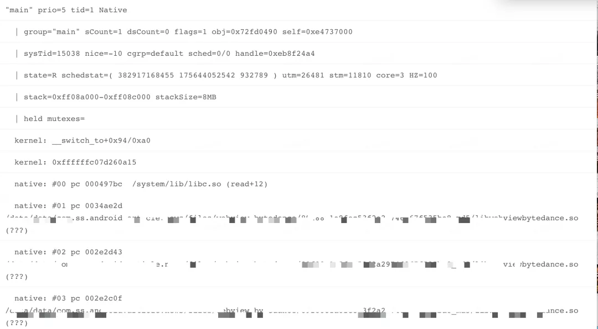
分析过程：
分析堆栈：
根据前文讲到的问题分析思路，首先观察 Trace 主线程堆栈，从上面堆栈，可以看到正在业务逻辑，但是当前这个业务逻辑是否耗时呢？如果耗时较长，是不是受到系统调度影响呢？带着这些疑问，我们来看一下系统侧的表现。
分析系统&进程负载：
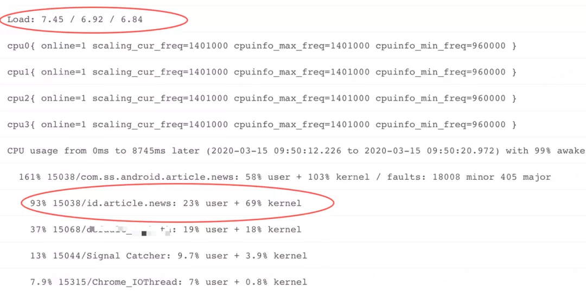
观察不同时段系统负载： 在 ANR Info 中我们搜索 Load 关键字，发现 ANR 前 1，前 5，前 15 分钟(
Load:7.45 / 6.92 / 6.84)，系统 CPU 整体负载并不高。观察进程 CPU 使用率： 进一步观察
CPU usage from 0 ms to 8745ms later，看到 ANR 之后 (later：表示发生 ANR 后一段时间各进程 CPU 占比，ago 表示：ANR 之后一段时间，各进程 CPU 占比)的这段时间，应用主进程 CPU 占比达到 161%，而且在 user，kernel 占比分布上，kernel 比例高达 103%！ 通过前文的介绍，我们知道对应用来说 kernel 空间 CPU 占比较高，说明应用侧应该发生了大量的系统调用，对普通应用来说，发生系统调用的多数场景都是文件 IO 操作。观察线程： 继续观察上图，可以看到应用进程内部的线程 CPU 占用，可以看到 **主线程的 CPU 占比 93%，其中 kernel 占用 69%，明显高于用户空间 23%**，说明 ANR 之后的这 8S 多，主线程依然在进行大量系统调用。
系统侧结论： 通过观察系统负载和各个进程的 CPU 使用情况，我们发现系统整体负载比较正常，但是我们的主进程 CPU 占比明显偏高，并且集中在主线程。
业务耗时：
根据上面的分析，我们将思路再次回到主线程，进一步观察 Trace 堆栈，发现上面有一个明显的系统调用(read)，难道是本次系统调用导致的 kernel 占比较高吗？那么当前逻辑在 ANR 发生前已经持续了多久呢？分析到这里，如果没有进一步的监控，或者业务不认可当前业务逻辑耗时，那么事情到这里可能就要告一段落，或者需要在业务层添加监控埋点进行复现了，但是如果每次遇到这类问题都要添加埋点，那么将是一个非常糟糕的事情。
别忘了，在前面介绍 ANR 问题分析思路时，我们还有一个杀手锏(参见：监控工具 Raster)，通过这个监控工具可以看到很清晰的看到：历史消息耗时，当前消息持续时间以及消息队列未调度消息 Block 耗时。结合上面这个问题，我们看到了本次主线程消息调度情况，参见下图：
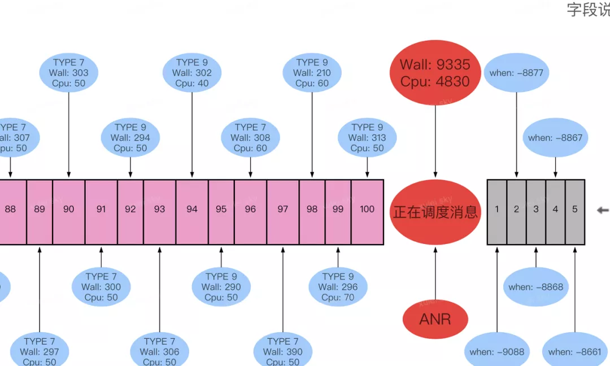
通过还原的时序图，可以清晰看到 ANR 之前，主线程消息调度及耗时基本正常，没有发现明显耗时严重的消息，但是观察正在调度的消息，其 Wall duration 超过 9000ms，并且 Cpu duration 长达 4800ms+，说明该消息耗时非常严重。而且上图灰色部分显示第一个消息，被 Block 了 9S 以上，因此可以进一步的说明该消息被 Block 的时长，基本都是当前正在执行的消息导致。
问题结论：
通过上面这些分析信息和实际数据，我们可以得出如下结论：发生 ANR 问题时，系统负载良好。发生问题前，应用主线程消息调度状态良好，但是当前正在调度的消息耗时严重，导致了后续消息未能及时响应，引起了 ANR。
带着这些结论，在和业务对接时便会清晰高效很多。这种场景，属于比较常规和常见的问题，也是大部分同学排查问题的分析思路，过程相对轻松。接下来，我们再看另一种场景的 ANR 问题。
案例二：历史消息耗时严重
下面分析的这个案例，是大家经常遇到的，也是引起很多人困惑的一种场景：发生 ANR 时，Trace 堆栈落在了 NativePollOnce。根据我们的理解，这个场景一般表示当前线程处于空闲或 JNI 执行完之后，进行上下文切换的过程，相关逻辑比较清晰。
可是日常遇到的问题，有很多 Case 都属于这类场景，如果仅仅依靠系统日志让我们很难进一步分析。下面就看看我们是如何应对这类问题的：
主线程 Trace 堆栈：
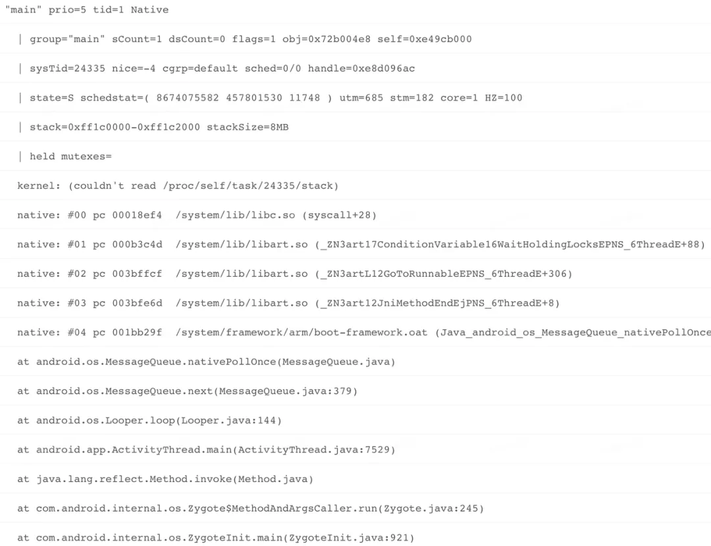
分析思路：
分析堆栈：
看到上面的 Trace 堆栈，基本无从下手，线程状态以及线程 utm,stm 时长都没有明显异常，但是线上确实有大量的 ANR 问题落在这个场景，难度在某种极端情况下虚拟机这部分逻辑耗时严重？但是从理论上来说这些假设确实不存在的。既然堆栈没有太多信息，我们就移步到系统层面，看看是否有线索可寻。
分析系统&进程负载：
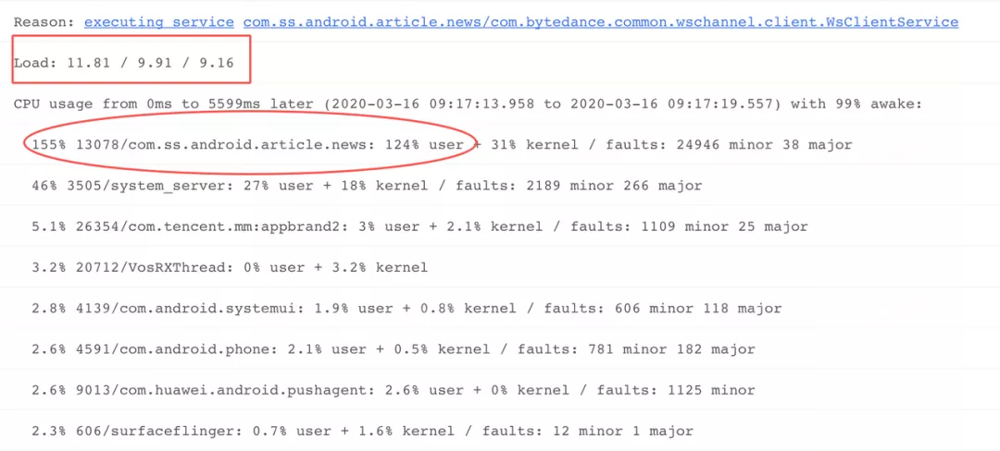
观察系统负载： 在 ANR Info 中查看Load关键字，发现系统在前 1 分钟，前 5 分钟，前 15 分钟各个时段负载并不算高，但是最近 1 分钟 CPU 负载为 11.81，比前 5，15 分钟都高，说明负载有加重趋势。
观察进程 CPU 分布： 进一步观察 CPU usage from 0 ms to 5599 later 关键字，看到 ANR 之后这 5S 多的时间，我们应用主进程 CPU 占比达到 155%，而且在 user，kernel 层面 CPU 占比分布上，user 占比 124%，明显很高，这时直觉告诉我们，当前进程应该有问题。
观察系统 CPU 分布：
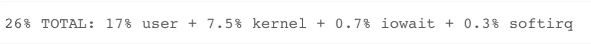
进一步分析系统负载，发现整体 CPU 使用率并不高。user 占比 17%，kernel 占比 7.5%，iowait 占比 0.7%，说明这段时间系统 IO 并不繁忙，整体也符合预期。
- 系统侧结论： 通过观察系统负载和各个进程的 CPU 使用情况，发现系统环境比较正常，但是我们的主进程 CPU 占比明显偏高，但因本次 Anr Info 中未获取到进程内部各线程 CPU 使用率，需要回到应用侧进一步分析。
应用侧分析：
根据上面的分析，我们将方向转回到当前进程，通过对比 Trace 中各线程耗时(utm+stm)，发现除了主线程之外，其它部分子线程耗时(utm+stm)没有明显异常，因此基本排除了进程内部子线程 CPU 竞争导致的问题，因此问题进一步聚焦到主线程。
接下来再将目光聚焦在主线程消息调度情况，通过监控工具观察主线程的历史消息，当前消息以及待调度消息，如下图：
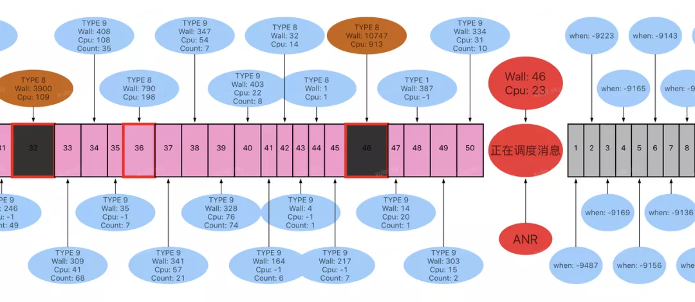
通过上图可以看到当前消息调度 Wall Duration 为 46ms。**在 ANR 之前存在一个索引为 46 的历史消息耗时严重(wall duration:10747ms)**，同时还有一个索引为 32 的历史消息耗时也比较严重(wall duration:10747ms)。
进一步观察消息队列第一个待调度消息，发现其实际 block 时长为 9487ms，因此我们排除了索引为 32 的历史消息，认为索引为 46 的消息耗时是导致后续消息未能及时调度的主要原因。
在锁定索引为 46 的历史消息之后，接下来利用监控工具中的消息堆栈采样监控，发现该消息执行过程，多次堆栈采样均命中创建 Webview 逻辑，原来业务在 UI 绘制过程直接实例化 Webview！(涉及到业务代码，采用堆栈详情不在此展示)
问题结论：
通过上面的分析并利用监控工具，我们可以很清晰看到发生 ANR 问题时，NativePollOnce 场景耗时并不长，导致本次 ANR 的主要原因是历史消息在 UI 绘制过程中同步创建 Webview，导致耗时严重。但是期间系统超时监控并没有触发，待主线程继续调度后续消息时，系统监控客户端响应超时，捕获了主线程正在执行的逻辑。
这类场景在线上线下都大量存在，但是从 ANR 设计原理和 Trace 采集流程来看，很多并不耗时的消息在调度过程中都成为了“替罪羊”。
案例三：业务异常密集执行
接下来分析的这个 Case，在多个产品都有遇到，仅从堆栈上面看，也是经常遇到并困惑我们的，现象和上面分析的案例有些类似，即业务逻辑很简单，实际耗时很少，但是经常出现在各种 ANR Trace 上面，只是依照堆栈信息，就把这个问题草率的分配给相应业务方去解决，业务同学大概率也是一头雾水，不知道从何下手。
但是如果按照上面两类问题的分析思路，可能也会陷入困惑，这时如果换个思路，可能会是另一番景象，下面就来看看我们是如何分析的。
ANR 现场堆栈：
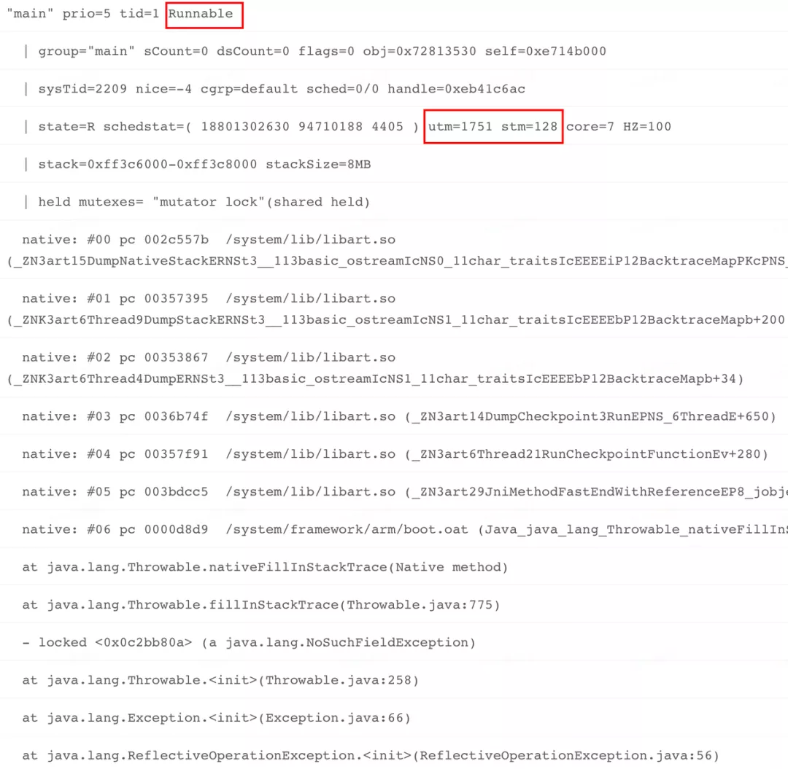
问题分析：
分析堆栈：
根据前文分析思路，先观察 Trace 主线程堆栈，从上面堆栈，可以看到业务逻辑，第一反应就是业务耗时？按照经验，我们还是习惯性的再去看看系统日志，进一步缩小或锁定方向。
分析 CPU 负载：
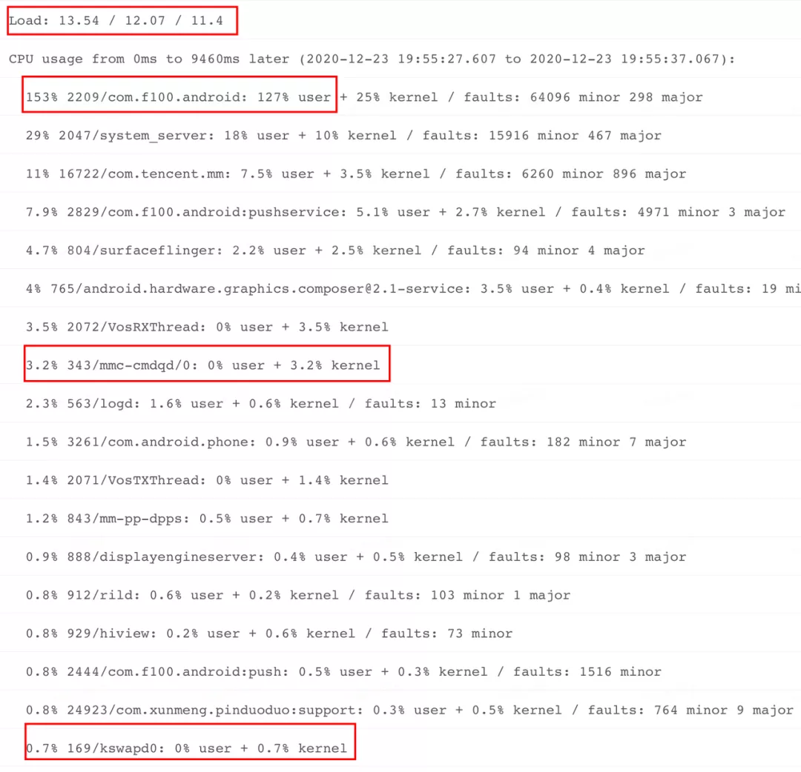
观察系统负载： 在 ANR Info 中搜索 Load 关键字，看到系统在各个时段(前 1，5，15 分钟)负载并不高，但是有加重趋势。
观察进程 CPU 分布： 进一步观察”CPU usage from 0 ms to 9460ms later”期间各个进程 CPU 占比情况，看到这段时间目标应用的主进程 CPU 占比达到 153%，而且在 user，kernel 占比分布上，user 占比高达 127%，存在明显异常。Kernel 占比 25%，也有些偏高。与此同时，我们进一步观察 kswapd，mmc 进程 CPU 使用率，发现占用率不是太高，说明当前系统的整体内存和 IO 并没有太严重问题。
观察系统 CPU 分布： 为了进一步验证系统 IO 及内存负载是否正常，接下来再观察一下系统整体 CPU 使用和分布，发现 iowait 占比 7.5%，相对来说有些偏高。
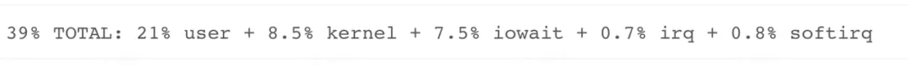
- 进程 CPU 再观察： 与此同时，我们在 ANR Info 里面还发现了一个关键信息，看到了另一个时段问题进程内部主要线程的 CPU 占用情况，通过下图我们可以看到主线程 CPU 占用 95%，属于明显偏高。
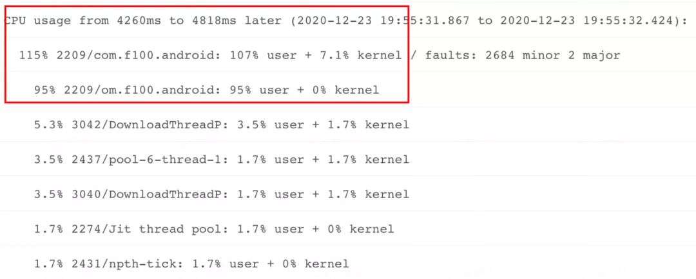
- 系统侧分析结论：通过上面的分析，基本可以得出如下结论：发生问题时，系统 CPU，Mem 负载比较正常，IO 负载有些偏高，发生 ANR 问题的应用进程 CPU 使用率存在异常，而且集中在主线程。
业务耗时：
根据上面的分析，已经将排查方向锁定在主线程 CPU 使用率较高，接下来观察该线程的 utm+stm，发现累计耗时(1752+128)*10ms=18.8S。对比本次进程启动时长才 22S，说明进程启动后，主线程基本是在满负荷执行！而且主线程的 CPU 响应能力非常不错！
至此我们再次确认主线程存在严重耗时，难道又是当前消息或某个历史消息耗时严重？于是快速切换到消息调度监控，一探究竟。
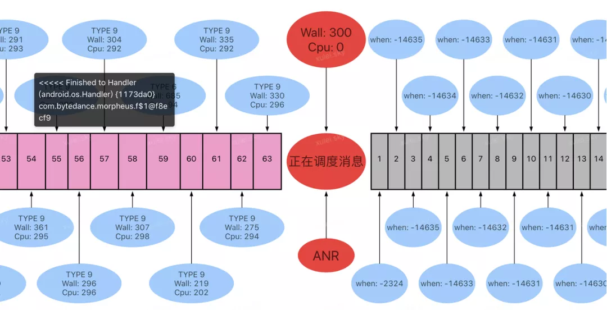
但是看到上面的消息调度监控时序图，发现 当前消息执行时长才 300ms，并不是我们期待的耗时很严重哪种场景，进一步观察 ANR 之前历史消息调度，也没有看到有单次耗时严重的消息。继续观察上图待调度消息，发现确实被严重 Block。既然主线程没有看到严重耗时，系统负载也比较正常，那么主线程 CPU 使用率为何会这么高呢，这个情况与预期不符，不符合常理啊！
观察 Block 消息： 之前我们介绍 Raster 工具 时，介绍该工具不仅可以记录历史消息，标记严重耗时，关键消息之外。还有一个作用就是获取消息队列待调度的消息，于是我们继续观察这些被 Block 的消息，发现了一个非常奇怪的现象（由于时序图只能在鼠标停留时展示单个消息详情，因此直接截取原始数据)，如下图：
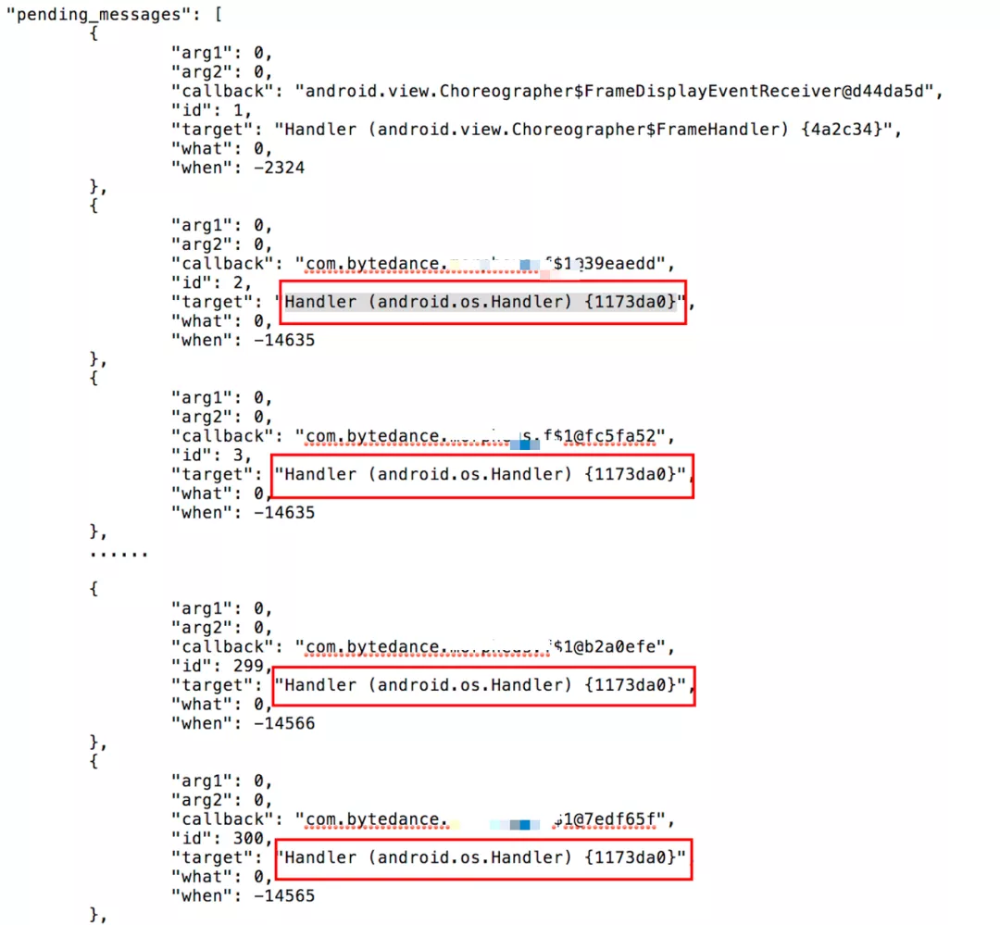
通过对比，发现消息队列待调度的消息中，除了第一个消息之外，其余的 200 多个消息(为了便于展示，目前只获取最多前 300 个)，竟然是同一个 Handler 对象(hash:1173da0)的消息，再进一步对比发现当前正在调度的也是该 Handler 对象的消息。
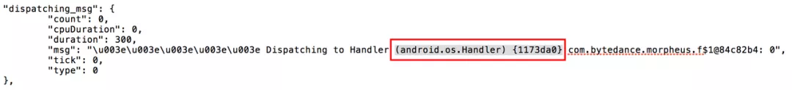
这个情况引起了我们的注意，顺着这个思路，继续翻看历史调度信息，发现每条历史记录 (尽管存在多条消息耗时较少被聚合的场景，但是我们会保留最后一个消息的 msg string 信息) 的last msg 也是相同的 handler 对象，如下图。
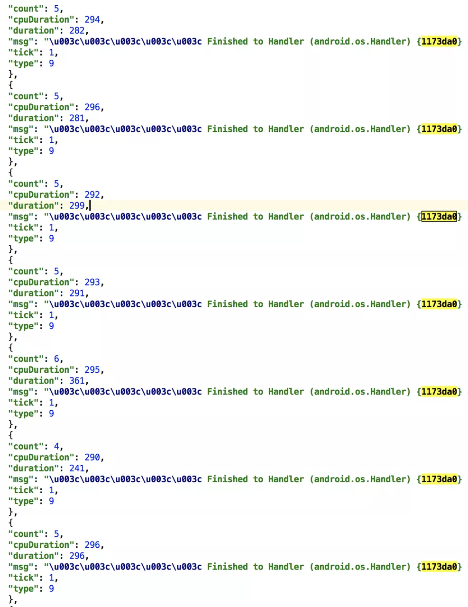
这么多消息都来自同一个 Handler，这么密集的在主线程执行，每条记录 cpu 耗时都在 290ms 左右，每条记录监控统计期间调度了 5 条消息。分析到这里，我们基本就有答案了，很有可能是当前业务发生异常，导致不停的向主线程发送消息，频繁密集的消息依次执行，严重阻塞了后续消息调度。
问题结论：
带着上面这些分析信息和监控数据，我们得出如下结论：应用在启动之后，业务逻辑发生异常，瞬间产生大量消息，尽管单次消息执行耗时并不严重，但是这些消息在主线程密集执行，严重影响了后续消息调度，进而导致后续消息响应超时。
对于这个问题，当我们把相关数据和结论反馈给业务同学时，业务同学进一步分析业务逻辑，发现当前逻辑确实存在隐患，改进之后，该 ANR 问题就此得到解决。
这种场景属于典型的业务逻辑异常造成的问题，如果没有监控工具由点到面的聚合和展示，单独分析某一次消息耗时，无论如何是找不到问题原因的。
案例四：进程内 IO 负载异常
上面重点介绍了主线程内部环境导致问题的相关案例，介绍当前消息耗时严重，历史消息耗时严重，以及消息密集这几种类型的分析思路，接下来再分析一个进程内 IO 抢占的案例，下面就来看看如何层层拨云揭雾，寻找真相的。
主线程 Trace 堆栈：
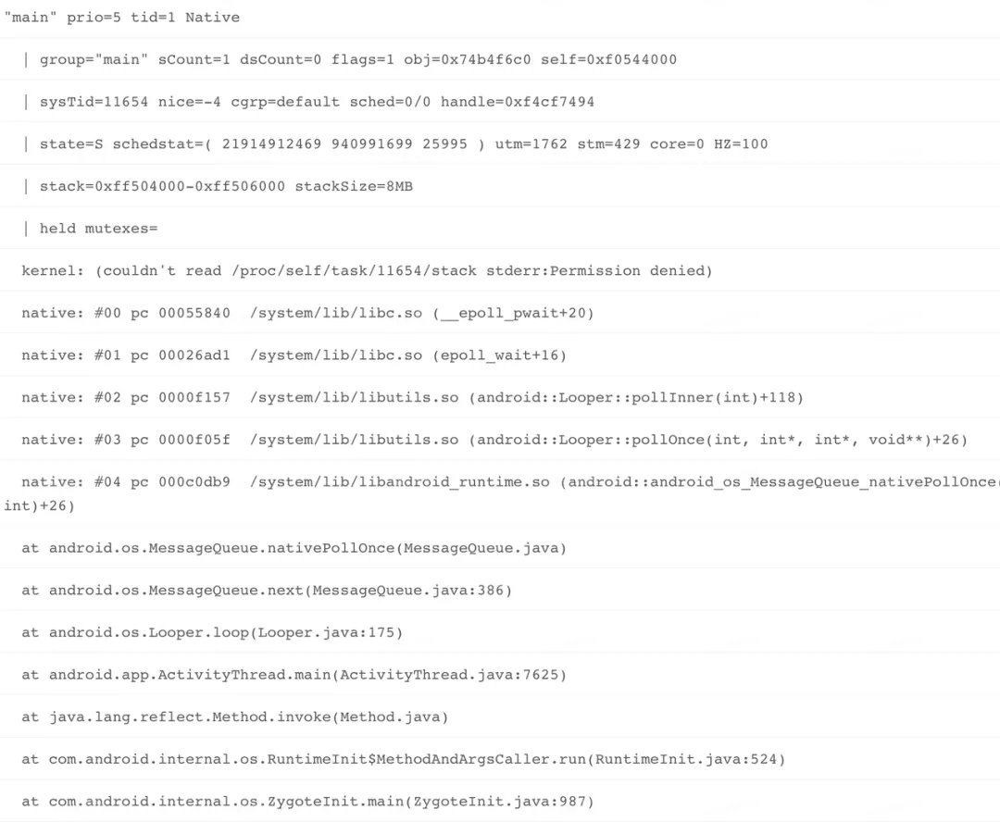
问题分析：
堆栈分析：
上面这个 Trace 信息，也是无从下手，堆栈本身是一个很清晰的系统逻辑，但是现实中确实也有大量 ANR Trace 落在这个场景，难道是系统进入 epoll_wait 之后，没有被及时唤醒？但是从理论上来说这些假设不存在。既然堆栈信息没有太明显，我们就把方向转移到系统侧，看看是否有线索。
系统&进程负载分析：
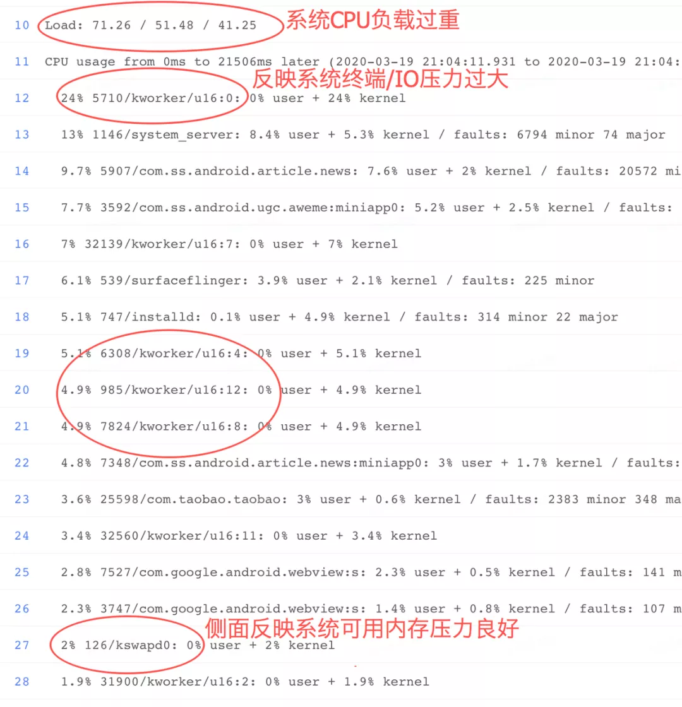
观察系统负载： 在 ANR Info 中我们搜索 Load 关键字，发现 系统各个时段(前 1，5，15 分钟)负载明显很高，并且最近 1 分钟负载为 71，又明显高于前 5，15 分钟，说明有系统负载进一步加重！
观察进程 CPU 分布： 进一步观察 CPU usage from 0 ms to 21506 later 关键字，看到 ANR 之后这段时间，内核线程 kworker 的 CPU 占比明显偏高，累计占比超过 45%！其它系统或应用进程 CPU 使用率普遍偏低。 通过前文介绍我们知道 kworker 属于内核线程，当 IO 负载过重时会在该线程有所体现。进一步观察 kswapd0 线程 cpu 使用率，发现只有 2%，而 kswapd0 主要应用在内存紧张的场景，说明这段时间系统内存负载基本正常。通过上面这些信息解读，可以大致推测最近一段时间系统负载过高，应该是 IO 请求导致，至于系统内存压力尚可接受，接下来我们继续求证。
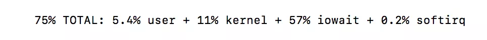
观察进一步分析系统整体负载，发现 user 占比只有 5.4%，kernel 占比 11%，但是 iowait 占比高达 57%！明显高于 user，kernel 使用率，说明这段时间系统 IO 负载非常严重。
而这个 IO 占比较高，也进一步实锤了我们上面的“观察进程 CPU 分布”的结论。那么是哪个应用导致的呢？遗憾的，受限于系统日志获取能力，依靠现有的信息并没有明显看到异常进程，那么 IO 发生在哪里，是否和当前进程有关呢？于是我们将思路再次回到应用内部。
应用侧分析：
通过上面的分析，我们基本锁定了是 IO 负载过重导致的问题，接下来便要进一步排查是否是当前进程内部存在异常，于是我们对比了各个线程的耗时(utm+stm)情况：
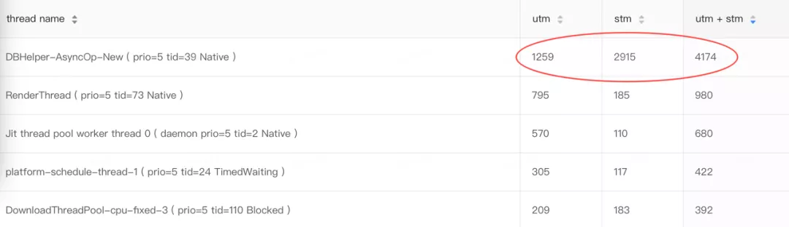
通过上图线程耗时对比可以清晰的发现，DBHelper-AsyncOp-New 线程无论是 utm 时长，还是 stm 时长，都明显超过其它线程，而 stm 高达 2915！ 这个耗时超出了我们的预期，实际场景中我们认为主线程才 CPU 消耗大户，其它线程都是配角。下面我们再看一下线程详情：
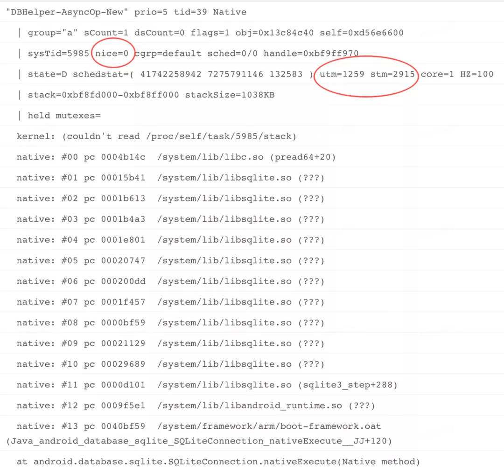
进一步查看该线程堆栈，发现 存在明显的 IO 操作，而且子线程优先级(nice=0)相对较高，stm(2915)+utm(1259)高达 4000+，换算成时长相当于 CPU 真实执行超过了 40S！
对比主线程耗时(utm:1035，stm:216)，以及进程启动时长(4 分 18 秒)，可以更好证明了 DBHelper 线程存在异常，stm 明显过长，说明存在大量系统调用，结合该线程业务，可以很快就猜到是 IO 读写引起的问题了。因为该线程本身就是负责应用内部数据库清理功能的。
经过上面的分析之后，下面来看一下主线程调度时序图，看看 IO 负载过重对主线程有多大影响。
消息调度时序图分析
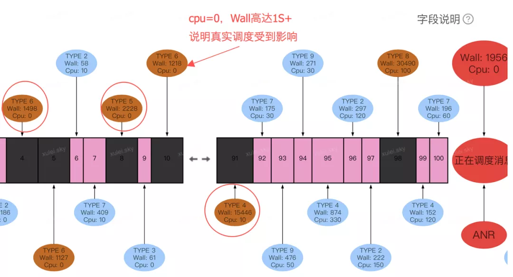
通过上图，可以清晰看到 ANR 消息之前，有多个历史消息耗时存在明显异常，而且 Wall duration 与 Cpu duration 耗时比例差距较大，部分消息 cpu 时长更是小于 1ms(单位 ms，0 则表示小于 1ms)，说明在此期间主线程整体调度受到很大影响，而且这些消息内部涉及 IO 访问的逻辑将会受到更大影响。
同时结合我们现场 checkTime 机制，发现 checkTime 调度明显存在严重 delay 情况。
问题结论：
带着上面这些分析信息和数据，我们可以得出如下结论：**通过层层分析我们可以发现，发生ANR时的当前消息耗时近2S，但并不是root case，主线程出现多个历史消息耗时，但也不是root case，真正导致本次ANR的原因是DBHelper-AsyncOp线程在过去一段时间进行了长时间的IO操作，严重影响了主线程乃至进程本身的CPU调度，导致后续消息响应不及时，触发系统超时(ANR)**。
对于该类问题，除了应用本身优化之外，也与一些机型设备差异有关，例如不同机型 IO 性能本身就存在很大差异，因此理论上无法彻底解决。同时无论是进程内部还是其他进程进行 IO 密集操作，都可能引起系统 IO 负载过重，进而导致系统乃至所有进程调度受到影响，对于该类问题只能进一步的优化相关逻辑，降低 IO 访问频率，减少主线程 IO 访问等等。
这类问题，在线上比较常见，但是在开发同学的线下测试过程，性能普遍符合预期，针对线上用户，应用场景错综复杂，绝非线下能模拟，并且针对不同手机设备，不同芯片平台，甚至磁盘可用空间的差异，其 IO 性能也表现的千差万别而这些小概率的问题，在数亿万用户环境中，会频频出现。
案例五：其它进程及系统负载异常
前面我们分析的几类问题，基本都是应用进程内部因素导致的问题，如主线消息耗时，消息密集执行，子线程 IO 资源抢占等等。线上环境中，除了进程或主线线程自身因素导致的问题外，还有一些是外部因素导致的问题，如其它进程或系统负载过重，进而影响当前进程正常调度。下面我们就来看一看这类问题是如何分析的。
主线程 Trace 堆栈：
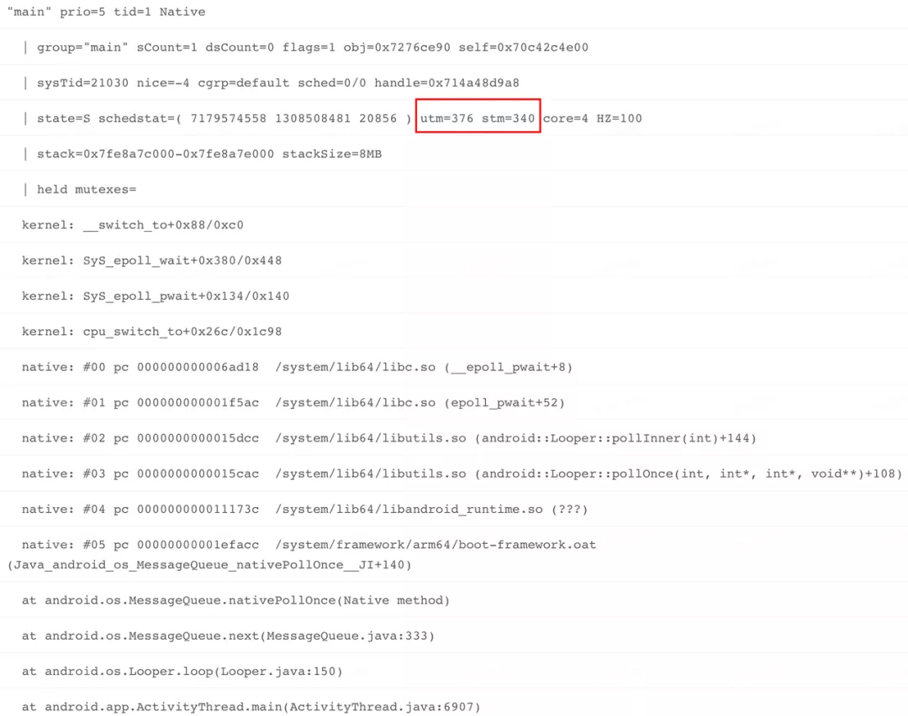
问题分析：
堆栈分析：
看到上面这个 Trace 信息，同样是熟悉的味道，发生 ANR 时，系统正处于 epoll wait 状态，线程 utm 及 stm 耗时并不算长，累计(376+340)*10=7160ms。观察到这里基本没有看到太多有效信息。接下来继续把方向转移到系统侧，看看是否有线索可循。
系统&进程负载分析：
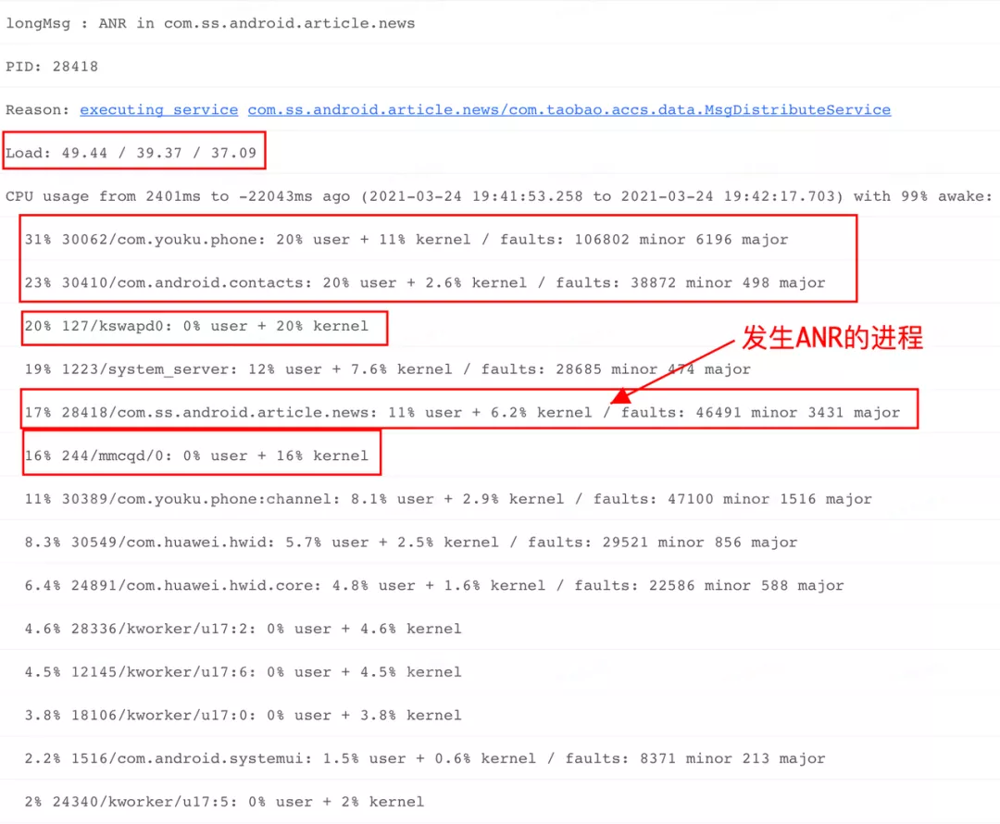
观察系统负载： 在 ANR Info 中搜索 Load 关键字，看到系统在各个时段(前 1，5，15 分钟)负载比较高，分别为 37.09，39.37，49.44，呈现加重趋势。
观察进程 CPU 分布： 进一步观察”CPU usage from 2401 ms to -22043ms ago”期间，各个进程 CPU 占比情况，看到这段时间目标进程 cpu 使用率很低，只有 17%。看到其它关键进程或线程，如 Kswapd0 线程，cpu 占比 20%，对于该线程来说，其出现则表示系统内存比较紧张了，而且看到了与其相关的 kworker，mmcqd 线程 cpu 占比也比较高。这些线程同时出现，足以说明当前系统环境发生了比较大的问题。而系统资源紧张，一般是因为某个或多个进程出现内存泄漏或大量 IO 读写导致，结合上面 Top 进程的 CPU 占比，com.youku.phone 以及 com.android.contacts 进程可疑性最大。而发生 ANR 问题的 com.ss.android.article.news 进程其 CPU 占比只有 17%。
观察系统 CPU 分布：
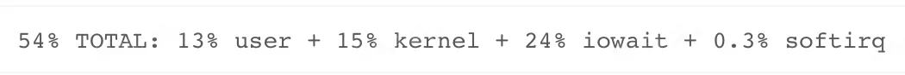
通过上图信息可以看到，系统 CPU 整体使用率达到 54%，kernel 占比 15%，iowait 占比高达 24%，有些偏高。说明系统负载确实存在异常，其结论与我们上面分析的基本一致。
当然在这里比较遗憾的是，因为是线上问题，我们无法通过拿到系统以及其它进程更多信息，否则可以更加清晰的看到发生异常的是哪个进程， 但是接下来要进一步排除是当前进程导致的系统负载问题，我们将视野再次回到应用侧。
应用侧分析：
通过上面的分析，我们基本锁定了是内存负载过重导致的问题，接下来便要进一步排查是否是当前进程内部存在异常，于是我们对比了各线程的耗时(utm+stm)情况：
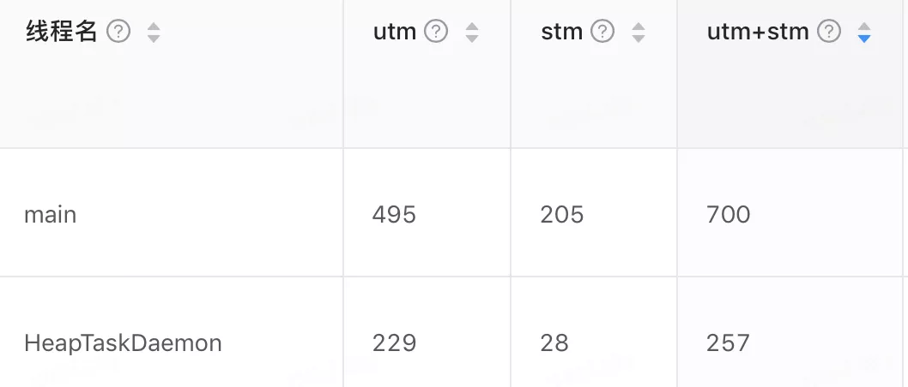
通过上图可以看到，排名第一的是主线程，其 utm+stm=700，换算成系统时长，700*10=7000ms，但是 对比观察进程启动时长，发现进程已经启动 108S，我们知道对应进程来说，启动的前 1~2 分钟，主线程是最为繁忙的，大量的业务和系统消息需要在主线程进行执行。同时我们进一步对比系统负载正常的情况，进程启动 2 分钟时主线程 CPU 执行时长明显大于当前时长。
下面我们再来看一下系统负载过重，对主线程消息调度的影响，如下图：
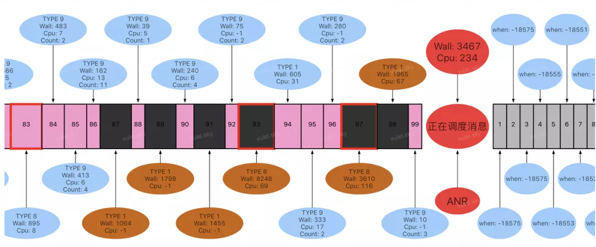
通过上图，可以清晰看到 ANR 消息之前，有多个历史消息耗时存在明显异常，而且 Wall duration 与 Cpu duration 耗时比例差距较大，从侧面也反映了在此期间主线程整体调度受到较大影响。
超时 Service 消息： 从上图可以清晰看到第一个待调度消息，其 Block 时长超过 18S 之多，接近于前面诸多耗时消息之和。同时从下图可以清晰看到发生 ANR 的这个 service 消息在消息队列排在第 8，消息 block 时长为 18482ms。
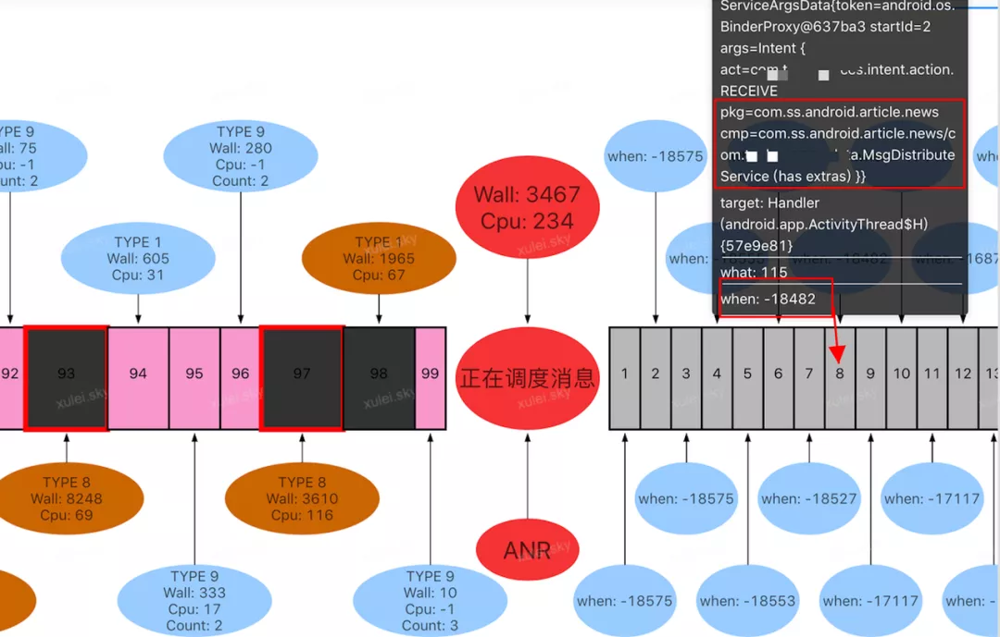
在前文应用四大组件超时归类中提到 Service 超时时长分别为 20S 或 200S，现在该消息在应用侧 block 时长为 18482ms，那就说明剩下 1S 多的时间，耗费在系统 AMS 服务发送到客户端 Binder 线程接收过程，否则没有达到 20S 超时，是不会触发系统超时的。因此也进一步说明了系统调度性能存在问题。
问题小结
带着上面这些分析信息和相关数据，我们可以得出如下结论：在进程启动前，系统负载已经很重，整个系统调度性能受到较大的影响，尽管发生 ANR 时当前堆栈耗时较长，但并不是 root case，多个历史耗时严重的消息也不是 root case，而导致本次 ANR 的应该是 com.youku.phone 或 com.android.contacts 进程，在过去一段时间进行大量系统资源访问，造成系统负载加重，严重影响了其他进程 CPU 调度，导致主线程消息处理不及时，触发系统超时(ANR)
对于该类问题，因为是其它进程导致系统资源紧张，进而影响了当前进程，因此我们无法从根本上解决，当然能够很好的分析并找出原因，也是对待问题的一种态度吧。
案例六：跨进程死锁
在前面更多从应用侧介绍了 ANR 案例的分析思路，接下来看看如何借助更多系统日志分析这类问题。当然，这类问题如果发生在线上，会因为应用侧无法获取跨进程 Trace 的原因，可能会被误归类为 IPC 耗时场景。
主线程 Trace 堆栈：
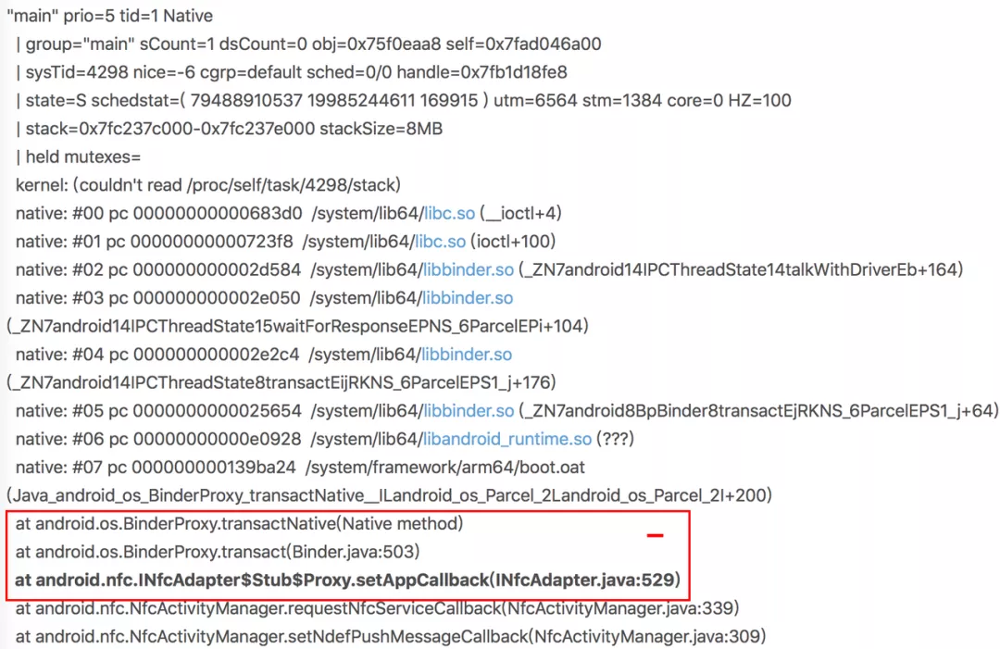
问题分析：
堆栈分析：
根据前面讲到的问题分析思路，先观察 Trace 主线程堆栈，从上面堆栈，可以看到业务逻辑发生 Binder 调用被 Block 的情况，但是这次拿到的是完整的 Trace 日志，那么接下来就沿着 Binder 请求逻辑，看一下响应进程的状态。
服务进程分析：
首先查找客户端主线程在和哪个 Binder 线程进行通信，搜索代理接口setAppCallback(Android 命名习惯，代理端和服务端函数命名基本保持一致），发现是 Nfc 的 Binder_3 线程响应了客户端请求：
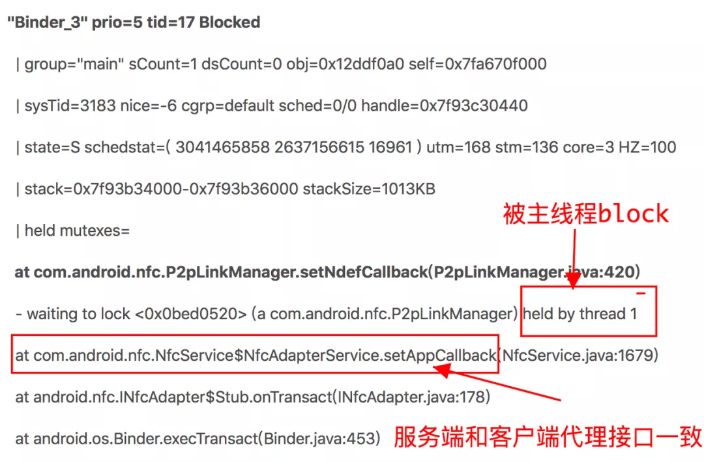
但是进一步观察堆栈信息，发现 Binder_3 线程被当前进程的主线程 Block，那么沿着这个线索看看主线程状态：
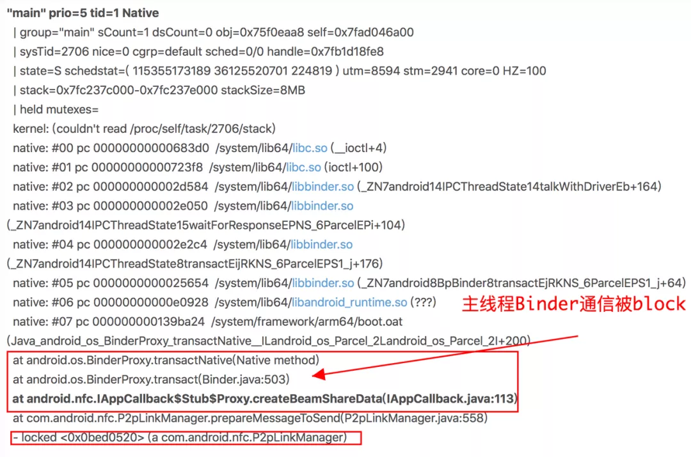
观察主线程状态，发现此刻主线程也在执行 Binder 通信，请求 createBeamShareData，同样根据命名习惯，继续搜索关键字 createBeamShareData，看看这次请求是哪个进程在响应，结果发现是 ANR 所在进程的 Binder_6 线程响应此请求。
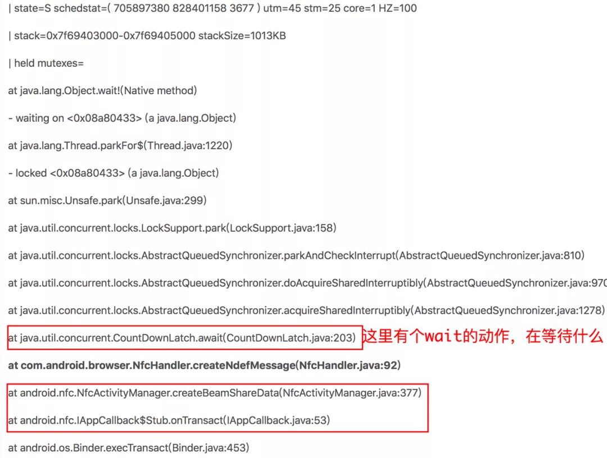
通过观察 Binder_6 线程的堆栈和状态，发现该线程处于 await 状态，明显是在等待其它线程通知唤醒！分析到这里，就需要大家结合 Read the Fuck Code 的精神进一步分析业务逻辑了，在研究一番业务逻辑之后，发现唤醒此线程的业务逻辑，已经通过 Handler 发送到主线程，正等待主线程执行呢，但是如果时序处理的不恰当，就会出现主线程还没来得及执行这个消息，就去监听 NFC 状态，进而引起了连锁反应。至此找到了依赖链路：
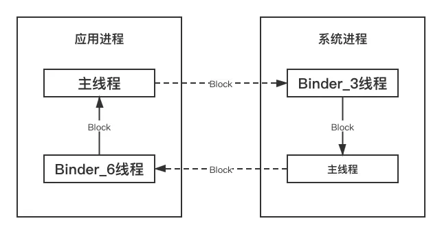
通过上图可以清晰的看到本次 ANR 原因：跨进程死锁。
总结：
我们按照前文 ANR 影响因素及归类分别选取了一个线上案例，并进行分析总结。回过头来看，第一类问题按照多数人的”解题思路”可能会很快的找到答案。在面对第二类问题时，如果没有监控工具就可能掉入“Trace 陷阱”了。第三类问题并不常见，但是在公司多个产品都有遇到过，因为这类问题更加隐蔽，如果依靠现有系统日志只能锁定方向，之后需要耗费大量的时间去添加埋点分析定位，但是通过我们的监控工具直观展示并暴露了更多细节，为成功定位问题扮演了关键角色。后面两类因为资源抢占的导致线程调度不及时的问题，通过监控工具很好的还原了 ANR 之前消息调度情况，更加清晰的证实了资源竞争对主线程的影响；但「barrier导致主线程假死」，「Service执行时序颠倒」等问题还有待解决。掌握了上述几类问题的分析思路，相信可以帮助大家应对工作中遇到大部分问题，但是所谓“林子大了，什么鸟都有”，下一篇将会介绍主线程假死，Service 执行时序颠倒等更加棘手的案例分析，敬请期待。